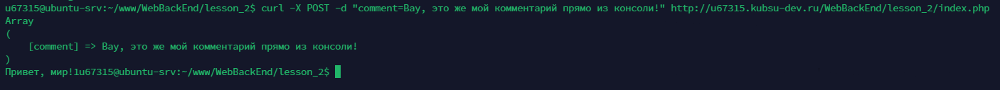

Задание 2
1) Получить главную страницу методом GET в протоколе HTTP 1.0
2) Получить внутреннюю страницу методом GET в протоколе HTTP 1.1;
3) Определить размер файла file.tar.gz, не скачивая его;
4) Определить медиатип ресурса /image.png
5) отправить комментарий на сервер по адресу /index.php

6) Получить первые 100 байт файла /file.tar.gz;
7) Определить кодировку ресурса /index.php.